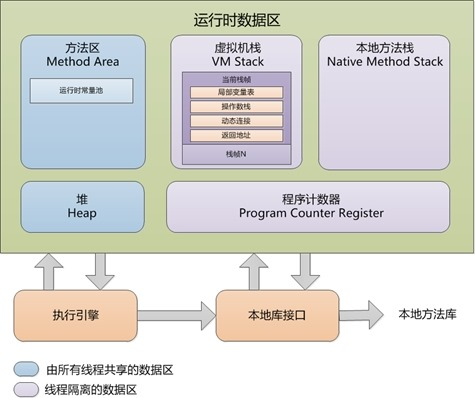

前言
本文是基于周志明的《深入理解Java虚拟机》
java与C++支架有一堵由内存动态分配和垃圾收集技术所围成的“高墙”，墙外面的人想进去，墙里面的人却想出来。
运行时数据区域
java虚拟机在执行java程序的过程中会把它所管理的内存划分为若干个不同的数据区域，ava虚拟机规范将JVM所管理的内存分为以下几个运行时数据区：程序计数器、Java虚拟机栈、本地方法栈、Java堆、方法区。 如下图所示：
《深入理解java虚拟机》中的描述：

程序计数器
程序计数器是一块较小的空间，他可以看做是当前线程所执行的字节码的行号指示器，在虚拟机的概念模型里（仅是概念模型，各种虚拟机可能会通过一些更高效的方式去实现），字节码解释器工作时就是通过改变这个计数器的值来选取下一条需要执行的字节码指令，分支，循环，跳转，异常处理，线程恢复等基础功能都需要依赖这个计数器来完成。
由于java虚拟机的多线程是通过线程轮流切换并分配处理器执行时间的方式实现的，在任何一个确定的时刻，一个处理器（对于多核处理器来说是一个内核）都只会执行一条线程中的指令。因此， 为了线程切换后能恢复到正确的执行位置，每条线程都需要有一个独立的程序计数器，各线程之间计数器互不影响，独立存储 ，我们称这类内存区域为“线程私有”的内存。
一个处理器都只会执行一条线程中的指令，所以，每个线程都需要一个独立的程序计数器，各线程之间计数器互不影响，独立存储。如果线程正在执行的是一个java方法，这个计数器记录的是正在执行的虚拟机字节码指令的地址；如果正在执行的是Native方法，这个计数器值则为空（Undefined）。
注意：此内存区域是唯一一个在java虚拟机规范中没有规定任何OutOfMemoryError情况的区域。
java虚拟机栈（Java Virtual Machine Stacks）
与程序计数器一样，java虚拟机栈（Java Virtual Machine Stacks）也是线程私有的，它的声明周期与线程相同，虚拟机栈描述的是java方法执行的内存模型：每个方法在执行的同时都会创建一个栈帧（Stack Frame）用于存储局部标量表，操作数栈，动态链接，方法出口等信息。每一个方法从调用直至执行完成的过程，就读应这一个栈帧在虚拟机栈中入栈到出栈的过程。
- 局部变量表
局部变量表存放了编译期可知的各种基本数据类型（8中基本数据类型），对象引用(reference类型)和returnAddress类型（指向了一条字节码指令的地址）
其中64位长度的long和double类型的数据会占用2个局部变量空间(Slot)，其余的数据类型只占用1个。局部变量表所需的内存大小在编译期就完成了分配，也就是说当进入一个方法时，此方法需要在栈帧中分配多大的局部变量表空间时完全确定的，运行期不会改变 。
如下代码：1
2
3
4
5
6
7
8
9
10
11
12
13
14package test03;
/**
* Created by smyhvae on 2015/8/15.
*/
public class StackDemo {
//静态方法
public static int runStatic(int i, long l, float f, Object o, byte b) {
return 0;
}
//实例方法
public int runInstance(char c, short s, boolean b) {
return 0;
}
}
上方代码中，静态方法有5个形参，实例方法有3个形参。其对应的局部变量表如下：
上方表格中，静态方法和实例方法对应的局部变量表基本类似。但有以下区别：实例方法的表中，第一个位置存放的是当前对象的引用。（如果对这张图看不同不要紧，通过下节对Class类文件结构的讲解，也许你就能理解其中的含义）
在Java虚拟机规范中，对这个区域规定了两种异常情况：
（1、如果线程请求的栈深度大于虚拟机所允许的深度，将抛出StackOverflowError异常。
（2、如果虚拟机在动态扩展栈时无法申请到足够的内存空间，则抛出OutOfMemoryError异常。
这两种情况存在着一些互相重叠的地方：当栈空间无法继续分配时，到底是内存太小，还是已使用的栈空间太大，其本质上只是对同一件事情的两种描述而已。在单线程的操作中，无论是由于栈帧太大，还是虚拟机栈空间太小，当栈空间无法分配时，虚拟机抛出的都是StackOverflowError异常，而不会得到OutOfMemoryError异常。而在多线程环境下，则会抛出OutOfMemoryError异常。
- 操作数栈
操作数栈又常被称为操作栈，操作数栈的最大深度也是在编译的时候就确定了。32位数据类型所占的栈容量为1,64为数据类型所占的栈容量为 2。当一个方法开始执行时，它的操作栈是空的，在方法的执行过程中，会有各种字节码指令（比如：加操作、赋值元算等）向操作栈中写入和提取内容，也就是入栈和出栈操作。
Java虚拟机的解释执行引擎称为“基于栈的执行引擎”，其中所指的“栈”就是操作数栈。因此我们也称Java虚拟机是基于栈的，这点不同于Android虚拟机，Android虚拟机是基于寄存器的。
基于栈的指令集最主要的优点是可移植性强，主要的缺点是执行速度相对会慢些；而由于寄存器由硬件直接提供，所以基于寄存器指令集最主要的优点是执行速度快，主要的缺点是可移植性差。 - 动态链接
每个栈帧都包含一个指向运行时常量池（1.7之前在方法区中，后面介绍）中该栈帧所属方法的引用，持有这个引用是为了支持方法调用过程中的动态连接。Class文件的常量池中存在有大量的符号引用，字节码中的方法调用指令就以常量池中指向方法的符号引用为参数。这些符号引用，一部分会在类加载阶段或第一次使用的时候转化为直接引用（如final、static域等），称为静态解析，另一部分将在每一次的运行期间转化为直接引用，这部分称为动态连接。（接下的文章将会讲解什么是直接引用，什么是间接引用） - 方法返回地址
当一个方法被执行后，有两种方式退出该方法：执行引擎遇到了任意一个方法返回的字节码指令或遇到了异常，并且该异常没有在方法体内得到处理。无论采用何种退出方式，在方法退出之后，都需要返回到方法被调用的位置，程序才能继续执行。方法返回时可能需要在栈帧中保存一些信息，用来帮助恢复它的上层方法的执行状态。一般来说，方法正常退出时，调用者的PC计数器的值就可以作为返回地址，栈帧中很可能保存了这个计数器值，而方法异常退出时，返回地址是要通过异常处理器来确定的，栈帧中一般不会保存这部分信息。
方法退出的过程实际上等同于把当前栈帧出站，因此退出时可能执行的操作有：恢复上层方法的局部变量表和操作数栈，如果有返回值，则把它压入调用者栈帧的操作数栈中，调整PC计数器的值以指向方法调用指令后面的一条指令。
本地方法栈（Native Method Stacks）
作用和虚拟机栈非常相似，区别：
虚拟机栈为虚拟机执行Java方法（也就是字节码）服务，而本地方法栈则为虚拟机使用到的Native方法服务
JVM规范没有强制规定本地方法栈中的方法使用的语言、使用方式、数据结构，所以具体JVM不同实现。 有的虚拟机如HotSpot虚拟机直接把虚拟机栈和本地方法栈合二为一了。
java堆（Java Heap）
Java Heap是Java虚拟机所管理的内存中最大的一块，它是所有线程共享的一块内存区域。几乎所有的对象实例和数组都在这类分配内存。Java Heap是垃圾收集器管理的主要区域，因此很多时候也被称为“GC堆”。
根据Java虚拟机规范的规定，Java堆可以处在物理上不连续的内存空间 、中，只要逻辑上是连续的即可。如果在堆中没有内存可分配时，并且堆也无法扩展时，将会抛出OutOfMemoryError异常。
方法区（Method Area）
方法区也是各个线程共享的内存区域，它用于存储已经被虚拟机加载的类信息、常量、静态变量、即时编译器编译后的代码等数据。方法区域又被称为“永久代”，但这仅仅对于Sun HotSpot来讲，JRockit和IBM J9虚拟机中并不存在永久代的概念。Java虚拟机规范把方法区描述为Java堆的一个逻辑部分，而且它和Java Heap一样不需要连续的内存，可以选择固定大小或可扩展，另外，虚拟机规范允许该区域可以选择不实现垃圾回收。相对而言，垃圾收集行为在这个区域比较少出现。该区域的内存回收目标主要针是对废弃常量的和无用类的回收。运行时常量池是方法区的一部分（1.7以后的版本把它放在了堆内存中），Class文件中除了有类的版本、字段、方法、接口等描述信息外，还有一项信息是常量池（Class文件常量池），用于存放编译器生成的各种字面量和符号引用，这部分内容将在类加载后存放到方法区的运行时常量池中。运行时常量池相对于Class文件常量池的另一个重要特征是具备动态性，Java语言并不要求常量一定只能在编译期产生，也就是并非预置入Class文件中的常量池的内容才能进入方法区的运行时常量池，运行期间也可能将新的常量放入池中，这种特性被开发人员利用比较多的是String类的intern（）方法。
根据Java虚拟机规范的规定，当方法区无法满足内存分配需求时，将抛出OutOfMemoryError异常。
常量池之中主要存放两大类常量：
1).字面量: 比较接近于Java语言层面的常量概念，如文本字符串、被声明为final的常量值等
2).符号引用: 属于编译原理方面的概念，包括了下面三类常量:
①.类和接口的全限定名
②.字段的名称和描述符
③.方法的名称和描述符
直接内存（Direct Memory）
直接内存并不是虚拟机运行时数据区的一部分，也不是Java虚拟机规范中定义的内存区域，它直接从操作系统中分配，因此不受Java堆大小的限制，但是会受到本机总内存的大小及处理器寻址空间的限制，因此它也可能导致OutOfMemoryError异常出现。在JDK1.4中新引入了NIO机制，它是一种基于通道与缓冲区的新I/O方式，可以直接从操作系统中分配直接内存，即在堆外分配内存，这样能在一些场景中提高性能，因为避免了在Java堆和Native堆中来回复制数据。
对象实例化分析
对内存分配情况分析最常见的示例便是对象实例化: Object obj = new Object();
这段代码的执行会涉及java栈、Java堆、方法区三个最重要的内存区域。假设该语句出现在方法体中，及时对JVM虚拟机不了解的Java使用这，应该也知道obj会作为引用类型（reference）的数据保存在Java栈的本地变量表中，而会在Java堆中保存该引用的实例化对象，但可能并不知道，Java堆中还必须包含能查找到此对象类型数据的地址信息（如对象类型、父类、实现的接口、方法等），这些类型数据则保存在方法区中。
另外，由于reference类型在Java虚拟机规范里面只规定了一个指向对象的引用，并没有定义这个引用应该通过哪种方式去定位，以及访问到Java堆中的对象的具体位置，因此不同虚拟机实现的对象访问方式会有所不同。
主流的访问方式有两种：使用句柄池和直接使用指针。
a. 通过句柄池访问对象
如果使用句柄访问的话，Java堆中将会划分出一块内存来作为句柄池，reference中存储的就是对象的句柄地址，而句柄中包含了对象实例数据与类型数据的具体各自的地址信息。如图1
b.直接指针访问
如果使用直接指针访问的话，Java堆对象的布局中就必须考虑如何放置访问类型数据的相关信息，reference中存储的直接就是对象地址，如图所示
这两种对象访问方式各有优势，使用句柄来访问的最大好处就是reference中存储的是稳定句柄地址，在对象被移动（垃圾收集时移动对象是非常普遍的行为）时只会改变句柄中的实例数据指针，而reference本身不需要被修改。
使用直接指针来访问最大的好处就是速度更快，它节省了一次指针定位的时间开销，由于对象访问的在Java中非常频繁，因此这类开销积小成多也是一项非常可观的执行成本。从上一部分讲解的对象内存布局可以看出，就虚拟机HotSpot而言，它是使用第二种方式进行对象访问，但在整个软件开发的范围来看，各种语言、框架中使用句柄来访问的情况也十分常见。
虚拟机对象的创建
Java是一门面向对象的编程语言，Java程序运行过程中无时无刻都有对象被创建出来。在语言层面上，创建对象通常（例外：克隆、反序列化）仅仅是一个new关键字而已，而在虚拟机中，对象（本文中讨论的对象限于普通Java对象，不包括数组和Class对象等）的创建又是怎样一个过程呢？
虚拟机遇到一条new指令时，
1).首先检验：
a.检查这个指令的参数是否能在常量池中定位到一个类的符号引用
b.并且检查这个符号引用代表的类是否已被加载、解析和初始化过的。
如果没有，那必须先执行相应的类加载过程。
2).在类加载查通过后，接下来虚拟机将为新生对象分配内存。 准备阶段
对象所需内存的大小在类加载完成后便可完全确定（如何确定在下一节对象内存布局时再详细讲解），为对象分配空间的任务具体便等同于一块确定大小的内存从Java堆中划分出来，怎么划呢？
a.假设Java堆中内存是绝对规整的，所有用过的内存都被放在一边，空闲的内存被放在另一边，中间放着一个指针作为分界点的指示器，那所分配内存就仅仅是把那个指针向空闲空间那边挪动一段与对象大小相等的距离，这种分配方式称为“指针碰撞”（Bump The Pointer）。
b.如果Java堆中的内存并不是规整的，已被使用的内存和空闲的内存相互交错，那就没有办法简单的进行指针碰撞了，虚拟机就必须维护一个列表，记录上哪些内存块是可用的，在分配的时候从列表中找到一块足够大的空间划分给对象实例，并更新列表上的记录，这种分配方式称为“空闲列表”（Free List）。
选择哪种分配方式由Java堆是否规整决定，而Java堆是否规整又由所采用的垃圾收集器是否带有压缩整理功能决定。
因此在使用Serial、ParNew等带Compact过程的收集器时，系统采用的分配算法是指针碰撞，而使用CMS这种基于Mark-Sweep算法的收集器时，就通常采用空闲列表。
3).考虑并发情况下线程安全问题
除如何划分可用空间之外，还有另外一个需要考虑的问题是对象创建在虚拟机中是非常频繁的行为，即使是仅仅修改一个指针所指向的位置，在并发情况下也并不是线程安全的，可能出现正在给对象A分配内存，指针还没来得及修改，对象B又同时使用了原来的指针来分配内存。
解决这个问题有两个方案，
a.一种是对分配内存空间的动作进行同步——实际上虚拟机是采用CAS配上失败重试的方式保证更新操作的原子性；
b.另外一种是把内存分配的动作按照线程划分在不同的空间之中进行，即每个线程在Java堆中预先分配一小块内存，称为本地线程分配缓冲，（TLAB ，Thread Local Allocation Buffer）。
哪个线程要分配内存，就在哪个线程的TLAB上分配，只有TLAB用完，分配新的TLAB时才需要同步锁定。虚拟机是否使用TLAB，可以通过 -XX:+/-UseTLAB 参数来设定。
4).内存空间初始化为0 对应类加载的初始化
内存分配完成之后，虚拟机需要将分配到的内存空间都初始化为零值（不包括对象头），如果使用TLAB的话，这一个工作也可以提前至TLAB分配时进行。这步操作保证了对象的实例字段在Java代码中可以不赋初始值就直接使用，程序能访问到这些字段的数据类型所对应的零值。
5).对象头的设置
接下来，虚拟机要对对象进行必要的设置，例如这个对象是哪个类的实例、如何才能找到类的元数据信息、对象的哈希码、对象的GC分代年龄等信息。这些信息存放在对象的对象头（Object Header）之中。根据虚拟机当前的运行状态的不同，如是否启用偏向锁等，对象头会有不同的设置方式。关于对象头的具体内容，在下一节再详细介绍。
6).执行init()方法
在上面工作都完成之后，在虚拟机的视角来看，一个新的对象已经产生了。但是在Java程序的视角看来，对象创建才刚刚开始——< init>方法还没有执行，所有的字段都为零呢。所以一般来说（由字节码中是否跟随有invokespecial指令所决定），new指令之后会接着就是执行< init>方法，把对象按照程序员的意愿进行初始化。
这样一个真正可用的对象才算完全产生出来。
内存泄露和内存溢出的区别：
内存泄露是值分配出去的内存没有被回收回来，由于失去了对该内存区域的控制，因而造成了资源的浪费，java中一般不会产生内存泄露，以为有垃圾回收器自动回收垃圾，但是这也不绝对，当我们new对象，并保存了其引用，但是后面一直没有用它，而垃圾回收器又不会去回收它，这便造成内存泄露。
内存溢出是值程序所需要的内存超出了系统所能分配的内存（包括动态扩展）的上限。
参考博客
兰亭风雨的专栏: http://blog.csdn.net/ns_code/article/details/17565503